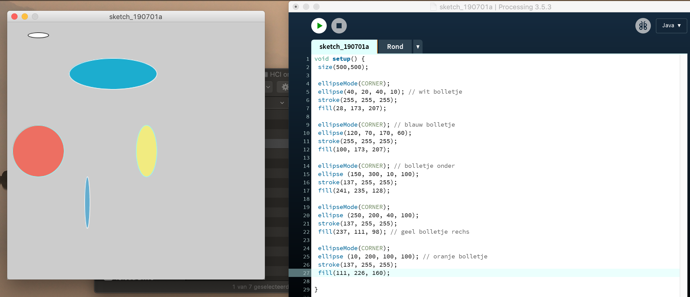
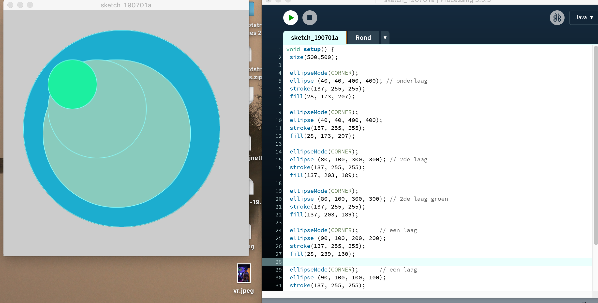
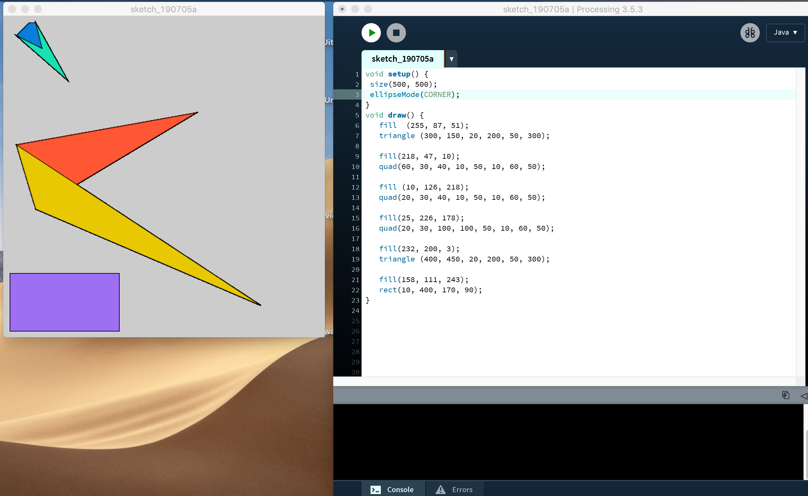
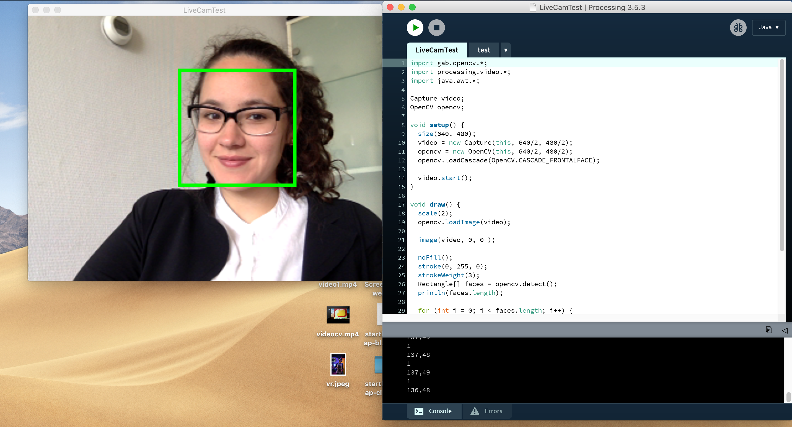
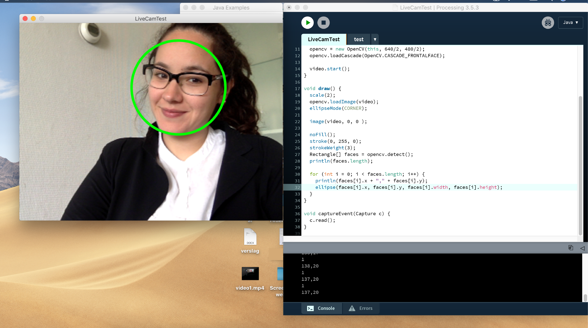
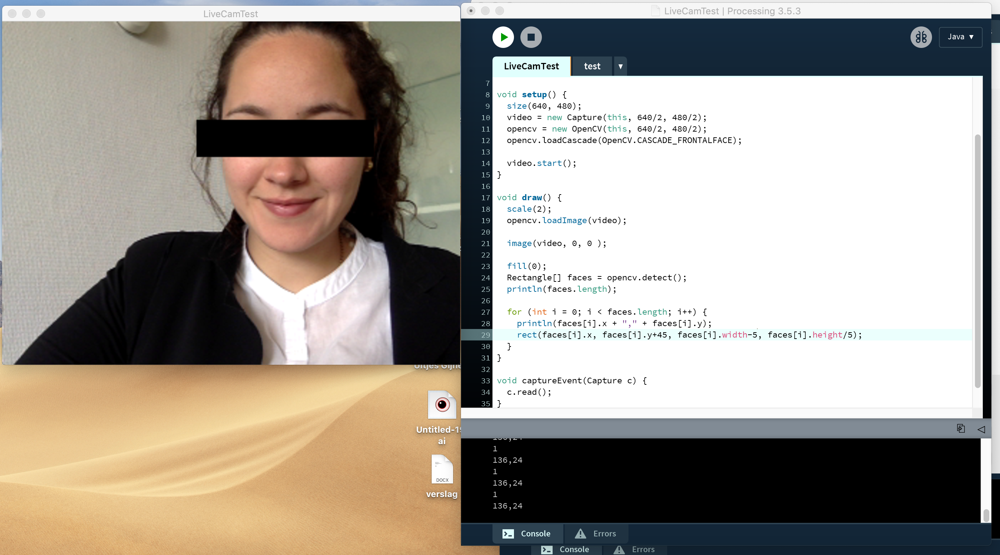
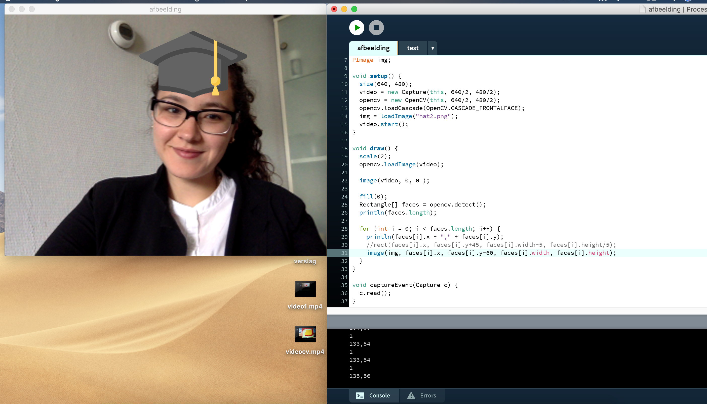

Wat is Computer Vision?
Computer Vision is gebaseerd op deep learning. Dit is een vorm van machine learning die gebruikmaakt van de architectuur van ons brein. Deep learning streeft ernaar om een systeem zelf voorspellingen te laten doen en beslissingen te laten uitvoeren op basis van de context. Net zoals onze eigen brein.
Bij de eerste opdracht was het doel om ellipsen te ontwerpen die aan verschillende voorwaarden voldeden (verschillende locaties, kleuren, breedtes en hoogte). Bij de volgende opdracht was er aangegeven dat een online libraries zijn die ieder gebruiker kan toepassen op zijn eigen ontwerp. In het onderstaande zijn er een aantal voorbeelden.
ProcessingOpdracht 1



Computer Vision
Opdracht 2



